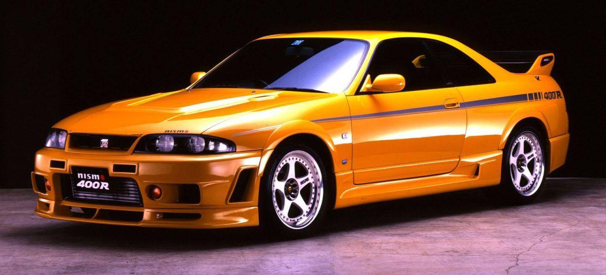

1995-1998
|  |
Nissan GT-R R33: Empezó con «mala pata» y acabó como el Nismo 400R «pata negra»
|
El primer Nissan Skyline GT-R, conocido como PGC10, hizo su debut público la decimoquinta edición del Salón del Automóvil de Tokio en 1968. Originalmente estaba disponible exclusivamente como un sedán de cuatro puertas y luego estuvo disponible como un coupé a partir de marzo de 1971. El sucesor del PGC10, el C110, debutó en el Salón del Automóvil de Tokio de 1972 y fue lanzado al año siguiente. La crisis del petróleo provocó una caída en la demanda de deportivos de alto rendimiento a principios de la década de 1970 y solo se construyeron 197 C110 antes de que se cancelara la producción hasta 1989. El R32, con un nuevo motor de doble turbocompresor y 2.6 litros y un concepto de tracción total, diseñado por NISMO, entró en producción el 21 de agosto de 1989 y recibió elogios de la prensa automovilística y del público general. El R32 se hizo con cinco victorias consecutivas en el Campeonato Japonés de Turismos y más de 200 victorias en carreras individuales, así como el récord no oficial de vuelta para un automóvil de producción en el mundialmente famoso circuito de Nürburgring. Esta generación también tuvo éxito en el Campeonato Australiano de Turismos, donde triunfó en 1991 y 1992. En este momento, los medios australianos le dieron el apodo de «Godzilla», que significa «Monstruo de Japón». El R33 hizo su debut en 1995, con un motor que era casi idéntico al del R32 y los mismos turbocompresores, así como la misma especificación para la caja de cambios manual de 5 velocidades. El R33 también se alzó con el récord de vuelta para un vehículo de producción en Nürburgring. Tras el R33 llegó el R34 que se lanzó en enero de 1999. Se hizo famoso, en parte, por su icónico color Bayside Blue. El modelo era más corto y las ruedas trasera se acercaron aún más al frontal gracias a un corto voladizo delantero. Por primera vez en la estirpe, se instaló una pantalla LCD multifunción de 5.8″ que nos mostraba lecturas de 7 parámetros diferentes así como mediciones del motor. La sexta generación del GT-R, el R35, hizo su debut público en el Salón del Automóvil de Tokio 2007 y se lanzó al mercado japonés poco después.
La mecánica RB26 de 2.6 litros turboalimentada de seis cilindros en línea era casi idéntica a la empleada en el R32 aunque contaba con algunos componentes internos reforzados y un caja de cambios casi idéntica -por no decir que era la misma de 5 velocidades-.
Los rumores apuntaban a que el motor RB26 debería haber ofrecido unas mayores prestaciones tal y como las que podemos ver en algunas preparaciones, sin embargo, para mantener a la Asociación de Fabricantes de Automóviles Japonenes tranquilos, esta potencia se limitó en los años 80 y 90 -respetado un curioso «pacto de caballeros»-. Como el motor era lo que era y no le podían sacar más jugo «sin romper el pacto invisible con la Asociación», optaron por mejorar el coche en otras áreas.
En el R33 Nissan optó por un sistema de suspensión de nuevo desarrollo tanto en la parte delantera como en la trasera. El modelo también contaba con una mayor rigidez gracias a los refuerzos ubicados en varios puntos críticos. Estas mejoras hicieron que el peso aumentara en 100 kg y un mayor peso unido a la misma potencia no entusiasmaban a los posibles compradores.
Al igual que hizo con la mecánica y la caja de cambios, Nissan también actualizó el sistema de tracción a las cuatro ruedas (ATTESA E-TS) y el sistema de dirección a las cuatro ruedas (Super HICAS), que en conjunto hicieron que el R33 GT-R funcionara mejor en carreteras más difíciles. El sistema Super HICAS fue desarrollado para reducir el subviraje de los modelos y en este caso, Nissan usó una pequeña cremallera de dirección que actuaba sobre las ruedas traseras. Esto redundaba en un aumento de la velocidad de guiñada y permitía que el automóvil girase más rápido. El sistema de tracción a las cuatro ruedas ATTESA E-TS era diferente y es que estaba diseñado para enviar todas las prestaciones a las ruedas traseras en la mayoría de condiciones. Esto redundaba en que las ruedas delanteras solo traccionaban cuando era necesario. Una batería de sensores se encargaban de monitorizar la rotación individual de las ruedas y decidían a dónde enviar potencia y en qué proporción. Como el R32 GT-R V-Spec había sido un éxito, Nissan lanzó un modelo algo más caro y de mayor rendimiento que se presentaba en el mercado con una suspensión mejorada con muelles más duros y otra puesta a punto de la suspensión. Además, el modelo estaba equipado con una versión «Pro» del sistema de tracción en las cuatro ruedas ATTESA que incluía un diferencial activo de deslizamiento limitado y se diferenciaba del resto por sus identificaciones exteriores y un nuevo diseño de llantas de aleación.
En 1996, Nissan lanzó el R33 GT-R LM Limited. Este modelo fue lanzado para conmemorar el regreso del GT-R a casa en la décima posición general de la carrera de Le Mans de 1995. Nissan ofreció el modelo en el color exterior «Champion Blue» y contó con el capó N1 y las canalizaciones específicas del paragolpes delantero. En el apartado estético también encontrábamos un alerón trasero de fibra de carbono y un logotipo «GT-R Skyline» debajo de una bandera a cuadros ubicado en el pilar C. La versión definitiva y quizá, más cotizada del R33 GT-R se lanzó en 1997 y se denominó Nismo 400R R33 GT-R. Solo se produjeron 44 unidades antes de que cesara la producción en 1998. El desarrollo general y la planificación del 400R fueron realizados por NISMO (Nissan Motorsports International). El automóvil se benefició de una gama de actualizaciones derivadas del automovilismo deportivo así como por un motor desarrollado y producido por REINIK. El motor RBX-GT2 instalado en el 400R era esencialmente una unidad muy especial del RB26DETT. Entre los cambios encontramos un cigüeñal específico, pistones forjados, varillas mejoradas, árboles de levas de gran elevación, un sistema lubricación mejorados, colectores de escape más grandes y turbocompresores mayores. NISMO desarrolló un sistema de escape mejorado para acompañar los cambios en el motor, utilizando titanio desde el convertidor catalítico. También había un nuevo intercooler y un embrague reforzado.
NISMO no sólo le metió mano al motor. Ajustaron la suspensión con unos nuevos amortiguadores Bilstein, rebajaron la altura y pusieron a punto la suspensión de una forma «insana». El 400R recibió actualizaciones aerodinámicas sobre el automóvil de serie como los parachoques, los faldones laterales, el capó y el alerón trasero, fabricándolos con fibra de carbono.
|